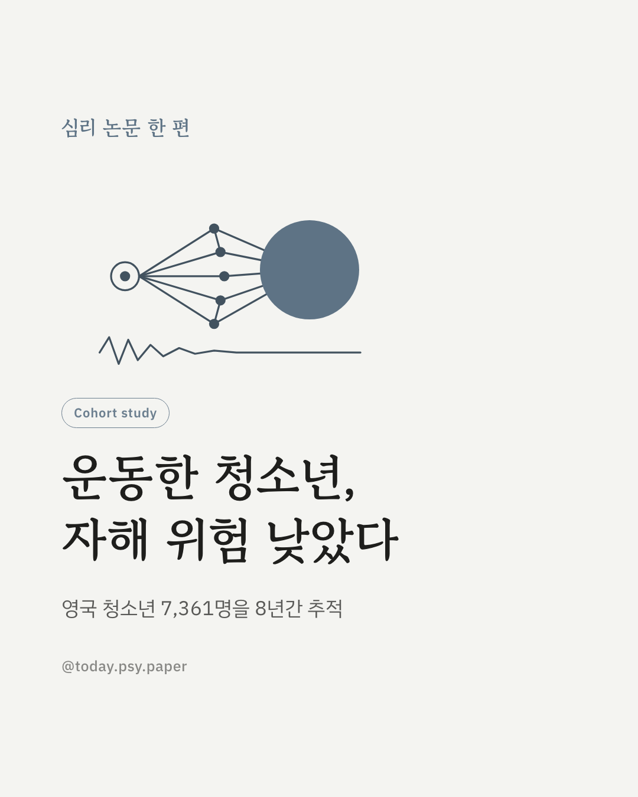
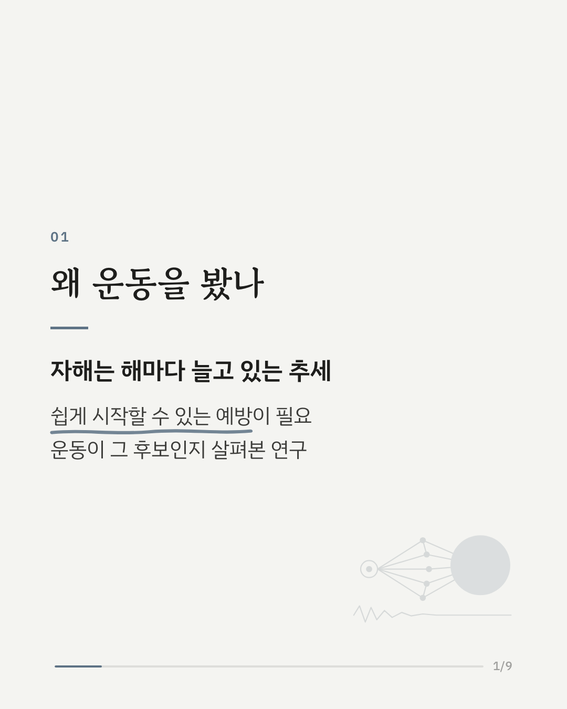
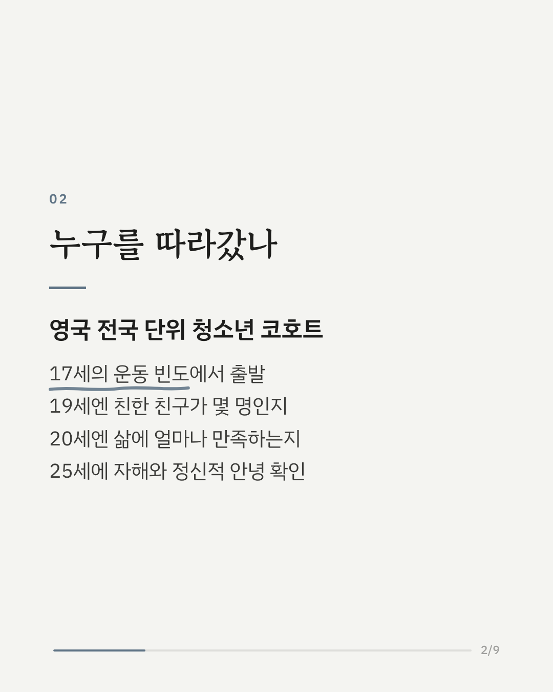
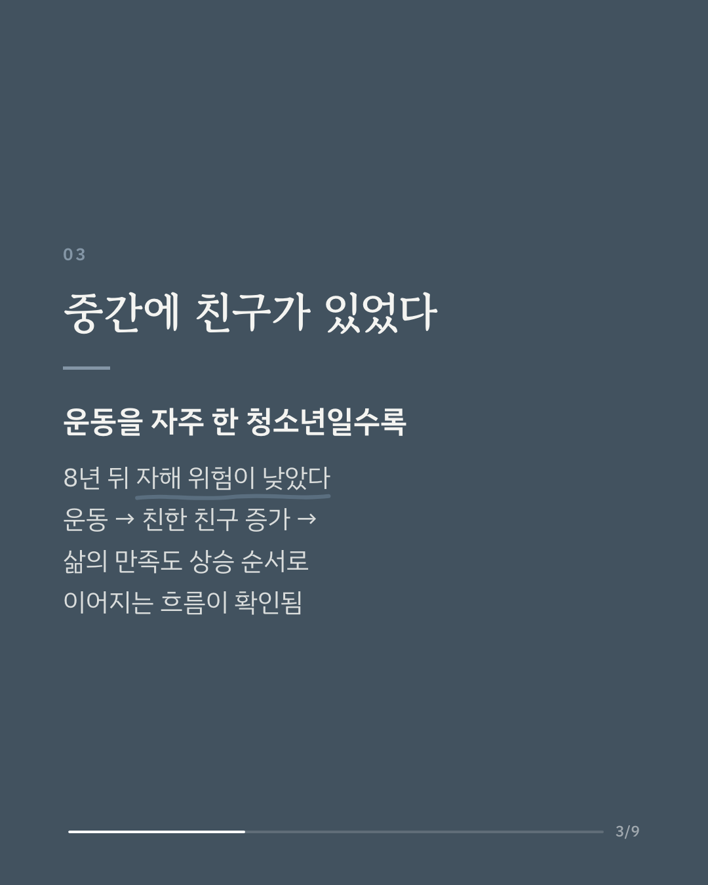
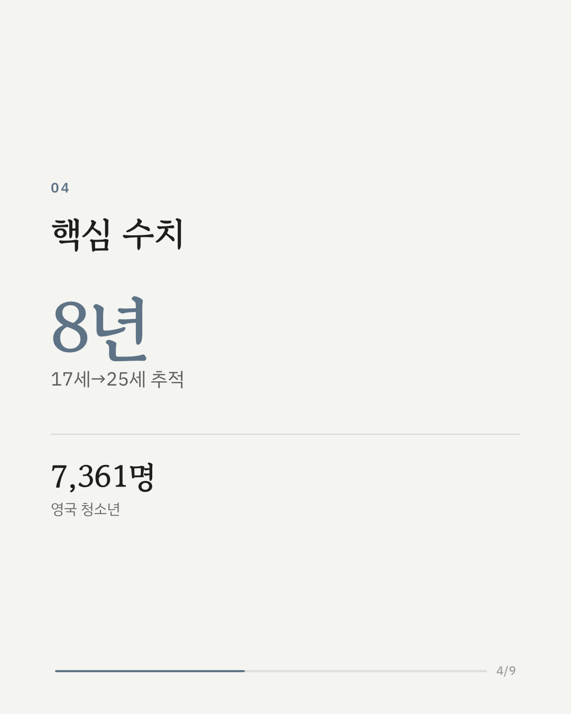
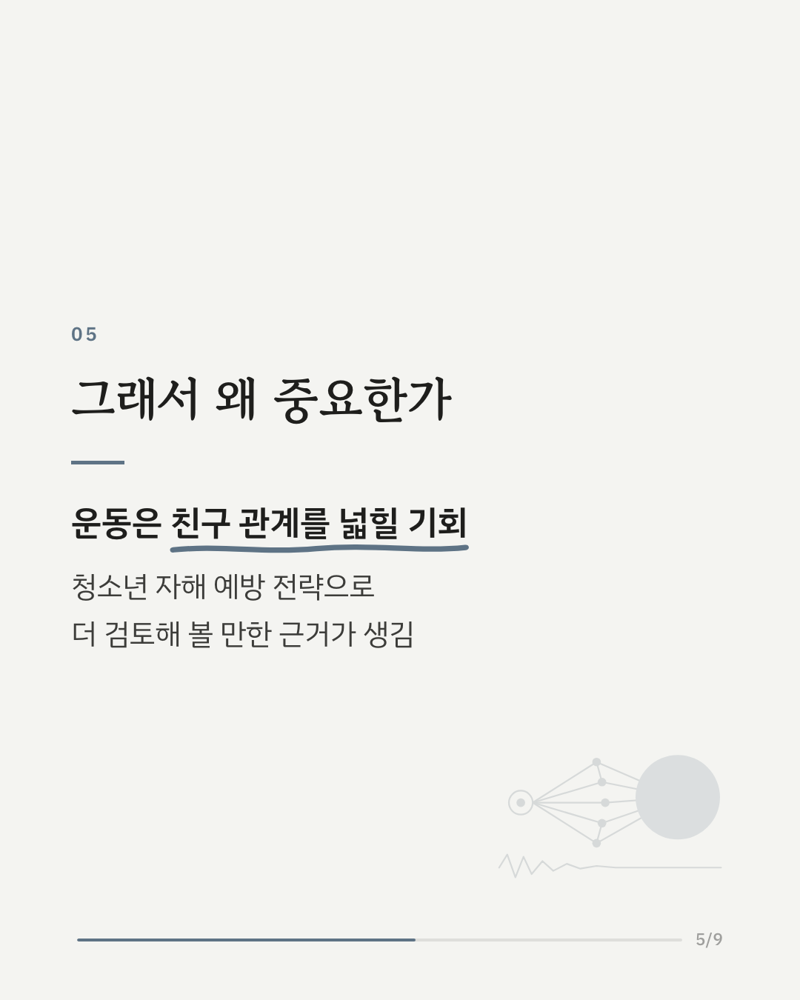
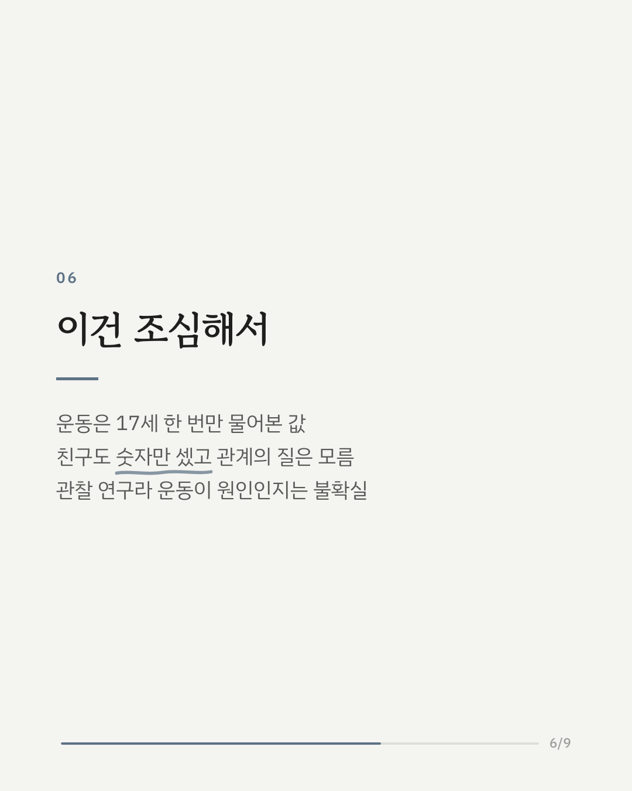
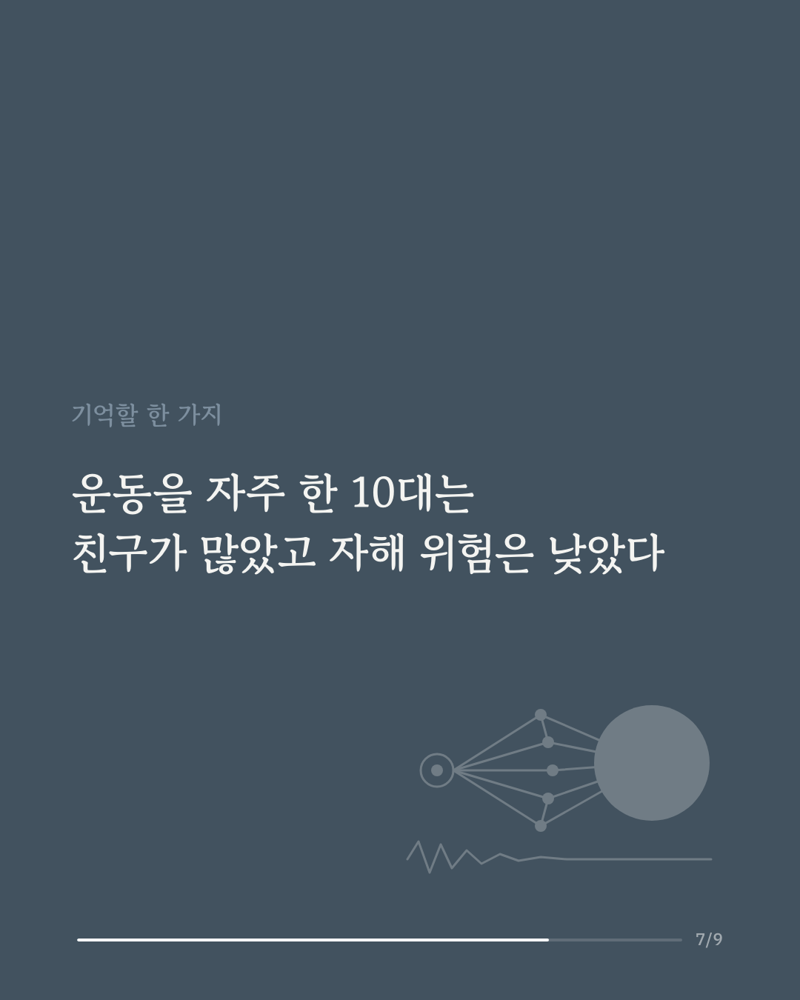
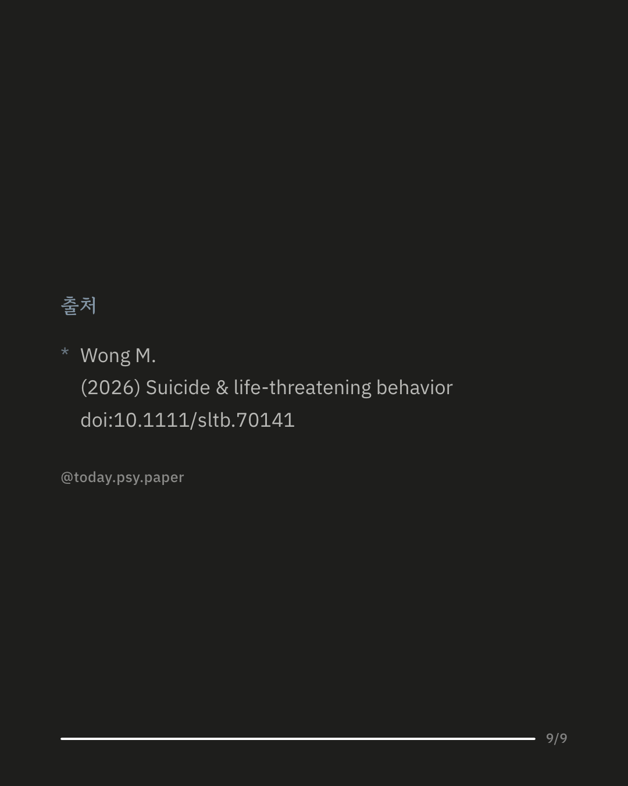

청소년기 운동이 훗날의 자해와 정신건강에 어떤 관련이 있는지 살펴본 연구입니다. 영국 전국 단위 코호트에 참여한 청소년 7,361명을 17세부터 25세까지 따라갔습니다. 연구진은 17세의 운동 빈도, 19세의 친한 친구 수, 20세의 삶의 만족도, 25세의 자해와 정신적 안녕을 차례로 확인했습니다. 그 결과 운동을 자주 한 청소년일수록 25세 무렵 자해 위험이 낮고 정신적 안녕도 더 좋은 편이었습니다. 이 관계는 친한 친구가 늘고, 그다음 삶의 만족도가 높아지는 흐름을 거쳐 이어지는 것으로 나타났습니다. 운동이 몸 건강을 넘어 친구 관계를 넓히는 기회가 될 수 있고, 청소년 자해 예방 전략으로 더 검토해 볼 근거가 생겼다는 점에서 의미가 있습니다. 다만 친구 관계는 친한 친구의 수로만 측정해 관계의 질은 알 수 없고, 관찰 연구라 운동이 직접적인 원인이라고 말하기는 어렵습니다. Suicide & Life-Threatening Behavior (2026), 'Improved Social Functioning Mediated the Effects of Adolescents' Sports Participation on Self-Harm and Psychological Wellbeing: A Prospective Cohort Study' 힘든 마음이 들 때는 자살예방상담전화 109, 정신건강상담전화 1577-0199에서 도움을 받을 수 있습니다. DOI: 10.1111/sltb.70141 #임상심리 #정신건강정보 #심리학연구 #논문리뷰 #청소년정신건강 #자해예방 #운동과정신건강 #삶의만족도
python3 publish.py 42839767